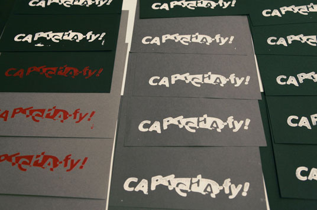

Ocular Character Recognition (2011–)
click to expand

Media
CAPTCHA-fy! served as the manifesto for Ocular Character Recognition, part of my Master's thesis which condenses the thesis' core ideas surrounding digital culture into a 12-page hand-made pamphlet. The document connects the concepts of Webpages for Humans to those of Everybody's Google. CAPTCHA-fy! demands us to “Appropriate the digital” and “Reclaim the physical”
Each pamphlet was handmade and hand-bound, with block printed covers. The cover showed a a computer-generated, laser-cut "CAPTCHA-fy!" logo, contrasting highly with the hand-made, DIY aesthetic of the rest of the pamphlet and the low-quality, xeroxed inner pages.